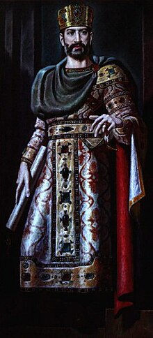
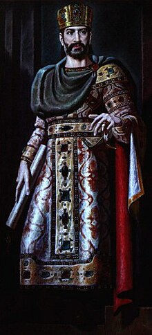
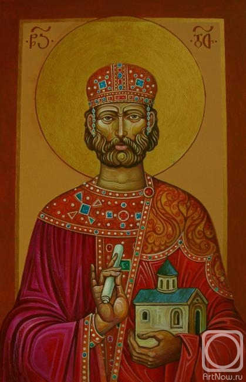
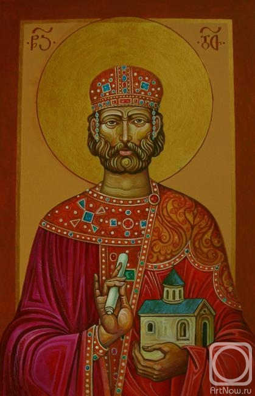

 

Home
1.David IV the builder
Davit IV Agmashenebeli (d. 1073,[3] Kutaisi - d. January 24, 1125[4][5]) - king of Georgia in 1089-1125, son of George II, a great statesman and a powerful general who has a special place takes place in the history of Georgia.David IV ascended the throne in 1089 at the age of 16. His father, George II, was forced to abdicate in favor of his son due to the political situation. David had a very difficult legacy: the country was ravaged by enemy invasions, Turko-Selchuk nomadic tribesThey settled in the conquered territories and threatened the Georgian people with physical destruction, noble feudal lords often disobeyed the king, the authority of the king of Georgia did not extend to the east of the Likhi ridge.[6]During his thirty-six-year rule, Davit Aghmashenebeli carried out deep reforms, which finally completed the process of unification of feudal Georgia, he expelled the Seljuk invaders from the country, turned Georgia into the strongest state in the region, and handed over to his heirs the country that stretched "from Nikofsi to the border of Daruband and from Ossetia to Soer and Aregatsad". The economic and church reforms of Davit Agmashenebeli, which became the main pillar of Georgia's strengthening, were especially important. His name is associated with the Ruis-Urbnis church council, which eliminated the violations that took place in the Georgian church.David IV's foreign policy was extremely active and served the cause of political, economic and cultural progress of feudal Georgia. Georgia at the time of David had wide-scale political and cultural relations with the North Caucasus (Ossets, Kivchaks, peoples of Dagestan) and other peoples, ancient Russia, Armenia, Shirvan, Byzantium and Crusaders.